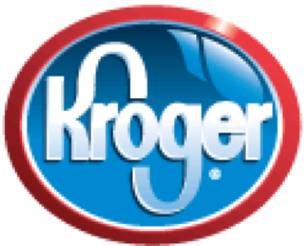
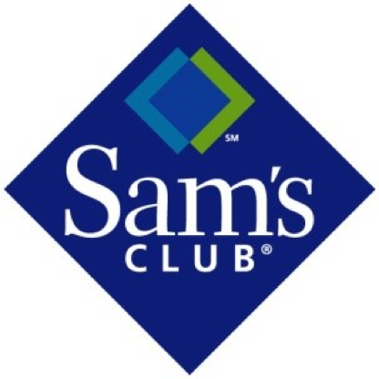
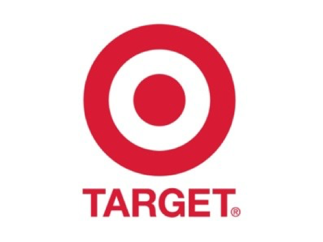
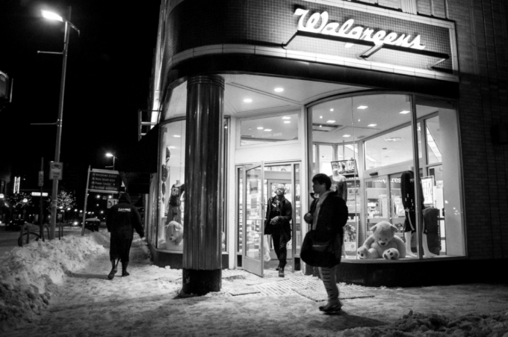

Ann Arbor 地区比较著名的综合性超市包括 Kroger, Meijer, Walmart, Target 等等。
1. Kroger Plymouth Rd 分店是离北校区最近的 24 小时营业的大超市。坐校车 Northwood 到北校区的 McIntyre Dr.站，向北穿过 Plymouth Road，就可以看见位于 Plymouth Mall 中心的 Kroger 了。亦可搭乘 AATA 的 2 路公共汽车到 Plymouth Mall 站（学生持 Mcard 免费乘车）。你可以在那里买到一些急需的生 活东西，比如蔬菜，水果，肉类，饮料（购买含酒精饮料需要出示证明你年满 21 岁的 ID），厨房用品，洗 发水等等。Kroger 在 Packard Road, Carpenter Road, Industrial Road 上还有其它几个分店。其详细地址 和营业时间可以在 Kroger 的网页上查到：http://www.kroger.com/。
2. Meijer是一家犹太人开的综合性大型连锁超市。每年秋季开学的时候学校会组织大巴接送学生去购物，请新生们注意 orientation 上相关的信息。Ann Arbor 附近有三家 Meijer，分别位于 Carpenter Road，Ann Arbor-Saline Road 和 Jackson Road。虽然它们的距离都比 Kroger 较远，但是那里的东西价格相对便宜， 种类也齐全一些。周末经常会有降价销售活动，所以比较适合周末购物。另外 Meijer 是 24 小时开放的。它的网址是：http://www.meijer.com/。
3. Walmart是全球销售量最高的综合性连锁超市，距离也比较远。相对 Meijer 来说，Walmart 的日用百货种类繁多，各种 size也相当齐备，所以经常都能在那里找到一些其它超市没有的东东。另外，由于大多数的百 货都是“Made in China”，所以价格极为便宜。离 Ann arbor 最近的一家 Walmart 位于 Ypsilanti 的 Ellsworth Road 上。Walmart 的网址是：http://www.walmart.com。
4. Sam’s Club是Walmart所属的‘山姆大叔俱乐部’。这里的东西一直以价格低廉，份量大而闻名，是喜欢居家过日子的人的最爱。在这里，你可以买到各种甜品，饮料，蔬菜，肉类，日用生活品和常见的保健药（比如说远远低于药店价格的鱼油，钙片和卵磷脂）。不过，唯一不好的地方就是你得先申请 membership 才能在 Sam’s Club 购物，年费从 30 美元到 100 美元不等。申请了卡之后还可以带你的朋友进去购物。 Ann arbor 附近的 Sam’s Club 位于 5450 Carpenter Road.其网址是：http://samsclub.com。
5. Target是位于一个主要卖家居用品和少量电器的超市。相对于其它的大超市，这里的东西要 fancy 了许多，它以包装精美，质量好闻名。不过，正如你能猜到的那样，Target 东西的价格也比一般的超市高出一些。在 Ann Arbor 附近有两家，一家位于 2000 W Waters Road, 另一家位于 3749 Capenter Road。Target 的网址为: http://www.target.com。
6. CVS是位于中校校区内的一家中型超市，地理位置是它最大的优势。平时若没空去那些大型超市，CVS 也是一个选择。它提供普通日用品，食物等。地址为 209 South State Street, Ann Arbor, MI 48104。
7. Walgreens也是位于中校校区内的一家超市，提供日用品，食物等。地址为317S. State St., Ann Arbor, MI.
